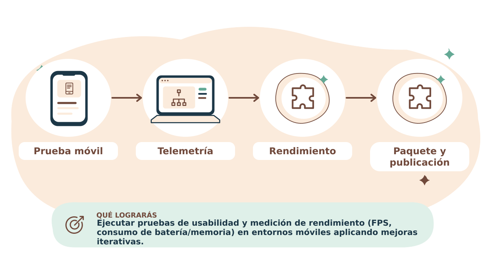
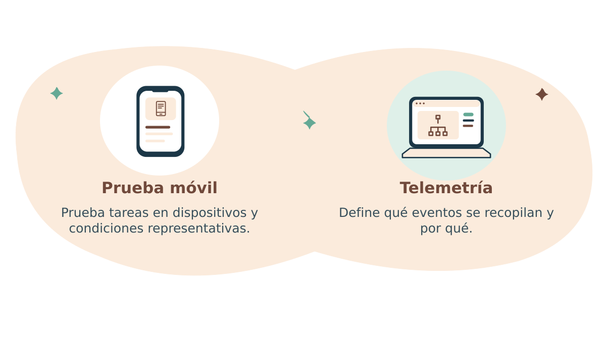
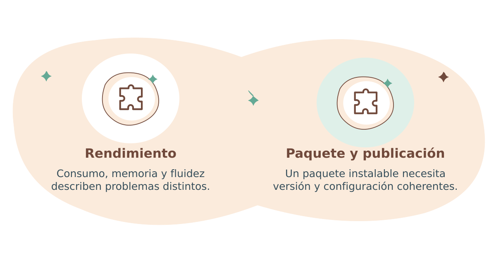
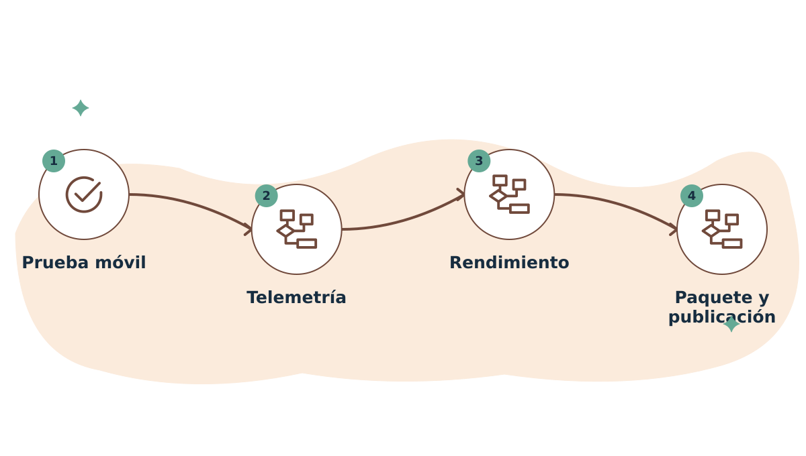

<div style="font-family:'Segoe UI',Arial,sans-serif;color:#333;line-height:1.6;max-width:100%;"><div style="background:#fff;border:1px solid #dee2e6;border-radius:15px;padding:22px;margin-bottom:20px;box-shadow:0 4px 12px rgba(0,0,0,.05);"><h2 style="color:#0056b3;margin-top:0;">Unidad 4 · Material de estudio</h2><h2 style="color:#1c3055; line-height:1.35; overflow-wrap:anywhere;">Unidad 4: Pruebas de usabilidad en entornos móviles, rendimiento y despliegue</h2>
<p style="overflow-wrap:anywhere;"></p>
<h3 style="color:#1c3055; line-height:1.35; overflow-wrap:anywhere;">Introducción</h3>
<p style="overflow-wrap:anywhere;">En esta unidad trabajarás con <strong>Prueba móvil</strong>, <strong>Telemetría</strong>, <strong>Rendimiento</strong> y <strong>Paquete y publicación</strong>. Observa cómo se relacionan estos conceptos al resolver el caso inicial.</p>
<h3 style="color:#1c3055; line-height:1.35; overflow-wrap:anywhere;">Resultados de aprendizaje</h3>
<p style="overflow-wrap:anywhere;">Resultados curriculares: Los estudiantes emplean entornos de programación y componentes móviles para ejecutar aplicaciones básicas y realizar pruebas de funcionamiento según procedimientos indicados.</p>
<p style="overflow-wrap:anywhere;"><strong>Resultados específicos de unidad</strong></p>
<ul>
<li style="overflow-wrap:anywhere;">Monitorea el consumo de memoria RAM, tasa de refresco (FPS) y uso de batería de la aplicación mediante herramientas de profiling.</li>
<li style="overflow-wrap:anywhere;">Ejecuta pruebas de usabilidad en dispositivos reales detectando bloqueos en el hilo principal y cuellos de botella de renderizado.</li>
<li style="overflow-wrap:anywhere;">Genera binarios firmados digitalmente (APK/AAB) optimizando el tamaño del paquete mediante técnicas de ofuscación y minificación.</li>
<li style="overflow-wrap:anywhere;">Documenta la ficha descriptiva de la aplicación con capturas, políticas de privacidad y metadatos para publicación en tiendas.</li>
</ul>
<h3 style="color:#1c3055; line-height:1.35; overflow-wrap:anywhere;">Mapa de contenidos</h3>
<div style="overflow-x:auto;max-width:100%;margin:16px 0;"><table class="table" style="width:100%;border-collapse:collapse;font-size:.9rem;">
<thead>
<tr>
<th style="padding:10px;border-bottom:1px solid #dee2e6;text-align:left;vertical-align:top;background:#eef4fb;color:#0056b3;" scope="col">Tema del PEA</th>
<th style="padding:10px;border-bottom:1px solid #dee2e6;text-align:left;vertical-align:top;background:#eef4fb;color:#0056b3;" scope="col">Subtemas</th>
</tr>
</thead>
<tbody><tr>
<td style="padding:10px;border-bottom:1px solid #dee2e6;text-align:left;vertical-align:top;">1. Metodología de pruebas de usabilidad específicas para dispositivos móviles (Mobile Usability Testing). / Herramientas de telemetría y analítica móvil (Firebase Analytics básico / Clarity móvil).</td>
<td style="padding:10px;border-bottom:1px solid #dee2e6;text-align:left;vertical-align:top;">4.1 Metodología de pruebas de usabilidad específicas para dispositivos móviles (Mobile Usability Testing).<br>4.2 Herramientas de telemetría y analítica móvil (Firebase Analytics básico / Clarity móvil).</td>
</tr>
<tr>
<td style="padding:10px;border-bottom:1px solid #dee2e6;text-align:left;vertical-align:top;">2. Monitoreo del rendimiento móvil / Generación de paquetes instalables (APK/AAB) y directivas de publicación en tiendas de aplicaciones.</td>
<td style="padding:10px;border-bottom:1px solid #dee2e6;text-align:left;vertical-align:top;">4.3 Monitoreo del rendimiento móvil: uso de CPU, fugas de memoria y tasa de refresco (jank/FPS).<br>4.4 Generación de paquetes instalables (APK/AAB) y directivas de publicación en tiendas de aplicaciones.</td>
</tr>
</tbody></table>
</div><h3 style="color:#1c3055; line-height:1.35; overflow-wrap:anywhere;">Caso inicial</h3>
<p style="overflow-wrap:anywhere;">La aplicación ficticia <em>RutaVerde Entrega</em> está lista funcionalmente, pero su primer paquete compilado de prueba pesa 68 megabytes, el desplazamiento por el catálogo de puntos de reciclaje presenta tirones visibles por debajo de 30 fotogramas por segundo al cargar imágenes grandes sin caché y los archivos de firma digital están desorganizados. Usted auditará su rendimiento y usabilidad, aplicará optimizaciones medibles, generará un paquete instalable limpio y redactará la ficha técnica y política de privacidad requerida para una tienda de aplicaciones.</p>
<h3 style="color:#1c3055; line-height:1.35; overflow-wrap:anywhere;">Fundamentos conceptuales</h3>
<p style="overflow-wrap:anywhere;">Una aplicación móvil que funciona en la computadora del programador puede resultar lenta o confusa en manos de un usuario real. Las <strong>pruebas de usabilidad móvil</strong> observan a participantes completando tareas reales en una pantalla táctil —idealmente en un dispositivo físico o, cuando no sea posible, en un emulador identificando expresamente sus límites— midiendo tasa de éxito, errores táctiles y dificultades de comprensión sin ayudar al participante durante el recorrido. Complementariamente, herramientas de <strong>telemetría móvil</strong> como Firebase Analytics o Clarity móvil permiten registrar pantallas más visitadas, caídas y patrones de interacción anónimos respetando la privacidad.</p>
<p style="overflow-wrap:anywhere;">A nivel técnico, la fluidez percibida por el usuario depende de mantener una <strong>tasa de refresco estable de 60 fotogramas por segundo (FPS)</strong> (o superior en pantallas modernas), evitando el fenómeno conocido como <em>jank</em> (tirones o saltos al desplazar listas). Estos tirones ocurren cuando tareas pesadas bloquean el <strong>hilo principal de interfaz de usuario (UI)</strong>, se decodifican imágenes de resolución excesiva o se acumulan <strong>fugas de memoria</strong> que saturan la <strong>memoria de acceso aleatorio (RAM)</strong> y disparan el uso de la <strong>unidad central de procesamiento (CPU)</strong> y la batería. Herramientas de perfilado como <em>Flutter DevTools</em>, <em>Android Studio Profiler</em> y el <strong>puente de depuración de Android (ADB)</strong> permiten medir exactamente qué vista consume memoria o cuadros de renderizado para optimizarla (usando listas perezosas o <em>lazy lists</em>, almacenamiento en caché de imágenes y operaciones asíncronas fuera del hilo visual).</p>
<p style="overflow-wrap:anywhere;">Finalmente, antes de distribuir una aplicación, el código de desarrollo se compila en modo de lanzamiento (<em>release</em>) generando un <strong>paquete de aplicación de Android (APK)</strong> para pruebas directas o un <strong>paquete compilado para tienda (AAB, Android App Bundle)</strong> que reduce el peso descargado por cada usuario. Este compilado debe <strong>firmarse digitalmente</strong> (sin publicar llaves privadas en repositorios), optimizarse mediante <strong>minificación y ofuscación</strong> de código para reducir tamaño y proteger la lógica, y acompañarse de una <strong>ficha técnica de tienda</strong> transparente (descripción fiel, capturas reales, clasificación por edad y política clara de privacidad sobre los datos o permisos que solicita). Recuerde siempre distinguir entre una prueba en emulador o compilado local y una publicación aprobada en tienda real.</p>
<h3 style="color:#1c3055; line-height:1.35; overflow-wrap:anywhere;">Tema 1: Metodología de pruebas de usabilidad específicas para dispositivos móviles (Mobile Usability Testing). / Herramientas de telemetría y analítica móvil (Firebase Analytics básico / Clarity móvil).</h3>
<p style="overflow-wrap:anywhere;"></p>
<h4 style="color:#1c3055; line-height:1.35; overflow-wrap:anywhere;">4.1 Metodología de pruebas de usabilidad específicas para dispositivos móviles (Mobile Usability Testing).</h4>
<p style="overflow-wrap:anywhere;"><strong>Desarrollo técnico y aplicación.</strong> Una prueba móvil observa tareas bajo condiciones físicas y de conexión definidas. Incluya orientación, interrupciones y aparición del teclado cuando afecten al recorrido. La grabación no reemplaza anotar éxito, ayuda y errores. Diferencie problema de interfaz y limitación del entorno para que la recomendación no intente solucionar con un cambio visual una dependencia que falla por otra causa.</p>
<p style="overflow-wrap:anywhere;">Prueba tareas en dispositivos y condiciones representativas. Registra éxito, obstáculos y diferencias de plataforma.</p>
<h4 style="color:#1c3055; line-height:1.35; overflow-wrap:anywhere;">4.2 Herramientas de telemetría y analítica móvil (Firebase Analytics básico / Clarity móvil).</h4>
<p style="overflow-wrap:anywhere;"><strong>Desarrollo técnico y aplicación.</strong> La telemetría define eventos con nombre, momento y campos consistentes. Un evento de apertura no acredita finalización. Compruebe que no se emita varias veces por reconstrucción de la pantalla. Limite atributos a lo necesario y documente qué no se observa. Un panel con muchos eventos puede tener menos utilidad que pocos indicadores bien relacionados con las tareas del caso.</p>
<p style="overflow-wrap:anywhere;">Define qué eventos se recopilan y por qué. Minimiza identificadores y compara eventos con pruebas observadas.</p>
<p style="overflow-wrap:anywhere;"><strong>Contenidos de base consignados en el PEA.</strong> Contenidos de base: Pruebas de usabilidad en entornos móviles · Núcleo curricular: Pruebas de usabilidad en entornos móviles</p>
<h3 style="color:#1c3055; line-height:1.35; overflow-wrap:anywhere;">Tema 2: Monitoreo del rendimiento móvil / Generación de paquetes instalables (APK/AAB) y directivas de publicación en tiendas de aplicaciones.</h3>
<p style="overflow-wrap:anywhere;"></p>
<h4 style="color:#1c3055; line-height:1.35; overflow-wrap:anywhere;">4.3 Monitoreo del rendimiento móvil: uso de CPU, fugas de memoria y tasa de refresco (jank/FPS).</h4>
<p style="overflow-wrap:anywhere;"><strong>Desarrollo técnico y aplicación.</strong> El rendimiento incluye tiempo de inicio, fluidez, memoria y uso de recursos. Una fuga conserva referencias innecesarias y puede crecer con navegación repetida. Una tasa media puede ocultar pausas visibles. Compare condiciones equivalentes y pruebe sesiones prolongadas, no solo el primer recorrido. La mejora necesita conservar funcionalidad y no desplazar el costo a batería, red o errores.</p>
<p style="overflow-wrap:anywhere;">Consumo, memoria y fluidez describen problemas distintos. Reproduce el escenario y compara métricas antes y después de una mejora.</p>
<h4 style="color:#1c3055; line-height:1.35; overflow-wrap:anywhere;">4.4 Generación de paquetes instalables (APK/AAB) y directivas de publicación en tiendas de aplicaciones.</h4>
<p style="overflow-wrap:anywhere;"><strong>Desarrollo técnico y aplicación.</strong> Un paquete distribuible necesita identificación, versión, configuración y firma según la plataforma del ejercicio. La compilación de depuración puede comportarse de modo distinto a la de distribución. Revise permisos y datos de prueba antes de empaquetar. Construir un archivo instalable no acredita aprobación de una tienda ni permite inventar condiciones que las fuentes del proyecto no documenten.</p>
<p style="overflow-wrap:anywhere;">Un paquete instalable necesita versión y configuración coherentes. Comprueba instalación y ejecución antes de preparar publicación bajo las directivas del curso.</p>
<p style="overflow-wrap:anywhere;"><strong>Contenidos de base consignados en el PEA.</strong> Contenidos de base: Ajustes funcionales basados en datos de uso · Núcleo curricular: Ajustes funcionales basados en datos de uso</p>
<h3 style="color:#1c3055; line-height:1.35; overflow-wrap:anywhere;">Ejemplo aplicado</h3>
<p style="overflow-wrap:anywhere;">Mide la fluidez al desplazarse por una lista extensa, acota el trabajo de renderizado y repite en el mismo equipo.</p>
<p style="overflow-wrap:anywhere;">Un estudiante prueba su aplicación únicamente en un emulador conectado en una computadora potente con 32 gigabytes de memoria y concluye: <em>"La aplicación funciona fluida en cualquier teléfono Android del mercado"</em>.</p>
<ul>
<li style="overflow-wrap:anywhere;"><em>Error metodológico:</em> El emulador utiliza recursos de escritorio y no refleja las limitaciones térmicas, de memoria ni de procesador de un teléfono de gama media o baja, ni reproduce la interacción táctil real con el pulgar.</li>
<li style="overflow-wrap:anywhere;"><em>Redacción técnica rigurosa:</em> <em>"Las pruebas ejecutadas en el emulador Pixel 6 (Android 14, nivel de plataforma 34) mantuvieron una tasa promedio de 58 fotogramas por segundo y consumo máximo de 145 megabytes de memoria; queda pendiente validar el comportamiento térmico y táctil en un dispositivo físico de gama media."</em></li>
</ul>
<h3 style="color:#1c3055; line-height:1.35; overflow-wrap:anywhere;">Profundización técnica de la unidad</h3>
<h4 style="color:#1c3055; line-height:1.35; overflow-wrap:anywhere;">Rendimiento observado y preparación de una publicación</h4>
<p style="overflow-wrap:anywhere;">Mida inicio, fluidez, memoria, red y batería en un contexto conocido. Un emulador no reproduce todas las características de un dispositivo físico. La compilación de depuración puede tener comportamiento de rendimiento diferente al paquete preparado para distribución; compare condiciones equivalentes.</p>
<p style="overflow-wrap:anywhere;"><strong>Ejemplo resuelto.</strong> Una lista muestra mil registros y crea todos sus elementos de una vez. El primer render tarda y la memoria crece. El uso de una lista con creación diferida puede reducir ese costo; debe comprobarse también desplazamiento, carga de imágenes y liberación de recursos. Una mejora del tiempo inicial no es suficiente si produce errores al desplazarse.</p>
<p style="overflow-wrap:anywhere;">Antes de distribuir, revise versión, permisos, identificador y configuración del entorno, conservando las claves de firma bajo control adecuado. La preparación del paquete sigue los requisitos de plataforma y el entorno descritos en los materiales de la práctica. La telemetría posterior necesita identificar versión y contexto sin recoger datos excesivos. <strong>Reflexión:</strong> ¿cómo detectaría que una mejora de velocidad introduce fallos en dispositivos con poca memoria?</p>
<h4 style="color:#1c3055; line-height:1.35; overflow-wrap:anywhere;">Datos y condiciones para estudiar el caso en detalle</h4>
<p style="overflow-wrap:anywhere;">El proyecto móvil ficticio <em>RutaVerde Entrega</em> (caso simulado exclusivamente con fines formativos) permite ubicar puntos de reciclaje y registrar entregas ecológicas. Antes de liberar la versión candidata, el área de calidad realizó una medición preliminar en modo depuración y detectó cuatro alertas técnicas críticas:</p>
<div style="overflow-x:auto;max-width:100%;margin:16px 0;"><table class="table" style="width:100%;border-collapse:collapse;font-size:.9rem;">
<thead>
<tr>
<th style="padding:10px;border-bottom:1px solid #dee2e6;text-align:left;vertical-align:top;background:#eef4fb;color:#0056b3;" scope="col">Indicador auditado</th>
<th style="padding:10px;border-bottom:1px solid #dee2e6;text-align:left;vertical-align:top;background:#eef4fb;color:#0056b3;" scope="col">Medición inicial registrada</th>
<th style="padding:10px;border-bottom:1px solid #dee2e6;text-align:left;vertical-align:top;background:#eef4fb;color:#0056b3;" scope="col">Meta técnica y de experiencia de usuario esperada</th>
</tr>
</thead>
<tbody><tr>
<td style="padding:10px;border-bottom:1px solid #dee2e6;text-align:left;vertical-align:top;">Tasa de refresco en listas (FPS)</td>
<td style="padding:10px;border-bottom:1px solid #dee2e6;text-align:left;vertical-align:top;">Caídas a 26 fotogramas por segundo con tirones visibles (<em>jank</em>) al deslizar el catálogo</td>
<td style="padding:10px;border-bottom:1px solid #dee2e6;text-align:left;vertical-align:top;">Mantener desplazamiento cercano a 60 fotogramas por segundo optimizando listas e imágenes en caché</td>
</tr>
<tr>
<td style="padding:10px;border-bottom:1px solid #dee2e6;text-align:left;vertical-align:top;">Consumo de memoria (RAM)</td>
<td style="padding:10px;border-bottom:1px solid #dee2e6;text-align:left;vertical-align:top;">Sube de 110 a 285 megabytes tras abrir y cerrar diez veces la vista de detalle</td>
<td style="padding:10px;border-bottom:1px solid #dee2e6;text-align:left;vertical-align:top;">Liberar controladores en <em>dispose</em> y redimensionar miniaturas para estabilizar la memoria sin fugas</td>
</tr>
<tr>
<td style="padding:10px;border-bottom:1px solid #dee2e6;text-align:left;vertical-align:top;">Peso del instalable (APK)</td>
<td style="padding:10px;border-bottom:1px solid #dee2e6;text-align:left;vertical-align:top;">68 megabytes en compilación sin optimizar</td>
<td style="padding:10px;border-bottom:1px solid #dee2e6;text-align:left;vertical-align:top;">Reducir el tamaño aplicando modo de lanzamiento (<em>release</em>), minificación, ofuscación y división por arquitectura</td>
</tr>
<tr>
<td style="padding:10px;border-bottom:1px solid #dee2e6;text-align:left;vertical-align:top;">Preparación para tienda</td>
<td style="padding:10px;border-bottom:1px solid #dee2e6;text-align:left;vertical-align:top;">Sin política de privacidad, capturas oficiales ni manejo seguro del almacén de llaves</td>
<td style="padding:10px;border-bottom:1px solid #dee2e6;text-align:left;vertical-align:top;">Generar APK (y AAB si aplica) firmado, mantener la llave privada fuera del repositorio y documentar ficha de tienda</td>
</tr>
</tbody></table>
</div><p style="overflow-wrap:anywhere;">Su misión durante las semanas 7 y 8 consiste en ejecutar una prueba breve de usabilidad móvil con tareas realistas sobre su aplicación, auditar su consumo de memoria, unidad central de procesamiento (CPU) y fotogramas por segundo antes y después de optimizar el código, compilar el paquete instalable APK firmado y entregar el expediente completo de lanzamiento en Moodle sin confundir pruebas en emulador con una aprobación en tienda comercial.</p>
<h4 style="color:#1c3055; line-height:1.35; overflow-wrap:anywhere;">Desarrollo del procedimiento y controles del caso</h4>
<p style="overflow-wrap:anywhere;">El siguiente recorrido desarrolla la misma práctica de esta unidad. Se estudia junto con sus datos y controles; las consignas y los criterios de entrega se conservan en el apartado de actividades y en la guía enlazada.</p>
<ol>
<li style="overflow-wrap:anywhere;"><strong>Pruebas de usabilidad móvil y diseño de telemetría (semana 7):</strong> Redacte un guion breve con dos o tres tareas móviles realistas (por ejemplo: localizar el punto de reciclaje más cercano y registrar una entrega en menos de un minuto) y aplíquelo con dos o tres participantes voluntarios (o entre compañeros de forma remota) en emulador o dispositivo físico. Registre tasa de éxito, tiempo de tarea, dificultades táctiles observadas y defina tres eventos clave que registraría en Firebase Analytics o Clarity móvil (sin capturar datos personales sensibles).</li>
<li style="overflow-wrap:anywhere;"><strong>Auditoría inicial de perfilado:</strong> Ejecute la aplicación en modo <em>profile</em> (o perfilado equivalente) en emulador o dispositivo real conectado mediante puente de depuración de Android (ADB), realice desplazamiento rápido por listas de elementos y abra varias pantallas repetidamente. Tome capturas reales registrando tres métricas base: tasa de refresco en fotogramas por segundo (FPS), uso de procesador (CPU) y consumo de memoria de acceso aleatorio (RAM) en megabytes.</li>
<li style="overflow-wrap:anywhere;"><strong>Optimización de renderizado y memoria (semana 8):</strong> Identifique y corrija al menos dos cuellos de botella reales en su código (por ejemplo: sustituir listas renderizadas de golpe por constructores perezosos como <em>ListView.builder</em> o <em>FlatList</em>, activar caché y tamaño máximo de decodificación en imágenes, evitar reconstrucciones innecesarias de componentes o liberar controladores y suscripciones al cerrar pantallas). Vuelva a medir en el perfilador y elabore una tabla comparativa exacta <em>"Antes frente a Después"</em>.</li>
<li style="overflow-wrap:anywhere;"><strong>Compilación de paquete instalable firmado y optimizado:</strong> Configure la firma digital segura para Android sin incluir contraseñas ni archivos de llave dentro del código público en GitHub, active la optimización y ofuscación/minificación de compilación en modo <em>release</em> y genere el archivo instalable <strong>APK</strong> (y de ser posible el paquete <strong>AAB</strong>), comprobando su tamaño final en megabytes y verificando que el APK instale y arranque correctamente en el emulador o dispositivo de prueba.</li>
<li style="overflow-wrap:anywhere;"><strong>Ficha descriptiva y directivas de publicación:</strong> Redacte la ficha completa de publicación para tienda de aplicaciones: título, descripción breve y detallada fieles a lo que la aplicación realmente hace, capturas limpias de pantalla, listado exacto de permisos solicitados y justificación, y una política breve de privacidad de datos. Aclare explícitamente las limitaciones del entorno utilizado (emulador frente a diversidad real de teléfonos) sin afirmar publicación ni aprobación real en tienda si no ocurrió.</li>
<li style="overflow-wrap:anywhere;"><strong>Verificación visual e integración final:</strong> Grabe una breve cápsula en pantalla o video asincrónico (2 a 3 minutos) mostrando el desplazamiento fluido tras optimizar, el tamaño del archivo APK generado y su arranque exitoso en el emulador. Suba el paquete APK, código actualizado (o enlace a GitHub), reporte de usabilidad/perfilado, ficha de publicación y video en una única entrega en Moodle.</li>
</ol>
<p style="overflow-wrap:anywhere;"><a href="https://docs.google.com/document/d/1mZ2uCu7CzIqred5M5ck8Unn1SoU5ZJPZ/edit?usp=drivesdk&amp;ouid=103668893019291892783&amp;rtpof=true&amp;sd=true" target="_self">Fuente del caso y del procedimiento: Guía de Prácticas, práctica 4</a>. Las explicaciones y los ejemplos resueltos de esta profundización son desarrollo didáctico de los contenidos de la unidad; sus cifras de ejemplo no sustituyen las del caso de la guía.</p>
<h3 style="color:#1c3055; line-height:1.35; overflow-wrap:anywhere;">Esquema de aplicación</h3>
<p style="overflow-wrap:anywhere;"></p>
<h3 style="color:#1c3055; line-height:1.35; overflow-wrap:anywhere;">Actividades de aprendizaje</h3>
<ol>
<li style="overflow-wrap:anywhere;"><p style="overflow-wrap:anywhere;"><strong>Trabajo Autónomo:</strong> Integra el proyecto completo de aplicación móvil con un reporte de pruebas de usabilidad en emulador o dispositivo, un archivo instalable APK y un documento único de análisis y fundamentación. Incluye el guion de pruebas, la configuración básica de telemetría, el perfilado del rendimiento, la optimización de recursos y la ficha de publicación. Reúne los resultados en una única versión consolidada en Moodle. </p>
</li>
<li style="overflow-wrap:anywhere;"><p style="overflow-wrap:anywhere;"><strong>Trabajo Práctico-Experimental de la Unidad 4 (100 % asincrónico):</strong> Auditoría de rendimiento en dispositivo o emulador orientada a medir perfiles de memoria RAM, uso de procesador y fotogramas por segundo, detectar y corregir un cuello de botella de renderizado o carga de imágenes, compilar el paquete instalable firmado (APK o AAB) con ofuscación/minificación y redactar los metadatos de publicación. El procedimiento completo se detalla en la Práctica 4 de la Guía de Prácticas y se entrega.</p>
</li>
</ol>
<h3 style="color:#1c3055; line-height:1.35; overflow-wrap:anywhere;">Cierre de la unidad</h3>
<p style="overflow-wrap:anywhere;"><strong>Síntesis aplicada.</strong> Ejecutar pruebas de usabilidad y medición de rendimiento (FPS, consumo de batería/memoria) en entornos móviles aplicando mejoras iterativas.</p>
<p style="overflow-wrap:anywhere;"><strong>Para reflexionar.</strong> ¿Qué condición resulta indispensable para comparar el rendimiento de dos versiones?</p>
<h3 style="color:#1c3055; line-height:1.35; overflow-wrap:anywhere;">Lecturas asignadas</h3>
<p style="overflow-wrap:anywhere;">Referencias y localizadores consignados en el PEA.</p>
<ul>
<li style="overflow-wrap:anywhere;"><strong>Básica.</strong> Google Flutter Documentation Team (2024). <em>Flutter &amp; Dart Official Documentation: Building Beautiful Native Apps</em>. Google Open Resources. <a href="https://docs.flutter.dev/" target="_self">https://docs.flutter.dev/</a> Lectura indicada en el PEA: Apartados relacionados con los contenidos de la asignatura.</li>
<li style="overflow-wrap:anywhere;"><strong>Básica.</strong> Google LLC (2024). <em>Material Design 3: The Next Generation of Material for Mobile Interfaces</em>. <a href="https://m3.material.io/" target="_self">https://m3.material.io/</a> Lectura indicada en el PEA: Apartados relacionados con los contenidos de la asignatura.</li>
<li style="overflow-wrap:anywhere;"><strong>Básica.</strong> Apple Inc. (2024). <em>Human Interface Guidelines: Design for iOS, iPadOS and Multi-touch Interaction</em>. Apple Developer. <a href="https://developer.apple.com/design/human-interface-guidelines/" target="_self">https://developer.apple.com/design/human-interface-guidelines/</a> Lectura indicada en el PEA: Apartados relacionados con los contenidos de la asignatura.</li>
<li style="overflow-wrap:anywhere;"><strong>Complementaria.</strong> Soegaard, M. y Dam, R. F. (2024). <em>The Encyclopedia of Human-Computer Interaction</em> (2.ª ed.). Interaction Design Foundation. Lectura indicada en el PEA: Apartados relacionados con los contenidos de la asignatura.</li>
<li style="overflow-wrap:anywhere;"><strong>Complementaria.</strong> Meta Open Source (2024). <em>React Native: Learn the Basics of Cross-Platform Mobile Development</em>. <a href="https://reactnative.dev/docs/getting-started" target="_self">https://reactnative.dev/docs/getting-started</a> Lectura indicada en el PEA: Apartados relacionados con los contenidos de la asignatura.</li>
<li style="overflow-wrap:anywhere;"><strong>Complementaria.</strong> Lidwell, W., Holden, K. y Butler, J. (2023). <em>Universal Principles of Design</em> (3.ª ed. actualizada y ampliada). Rockport Publishers. Lectura indicada en el PEA: Apartados relacionados con los contenidos de la asignatura.</li>
</ul>
</div></div>
